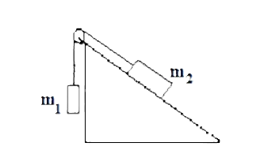
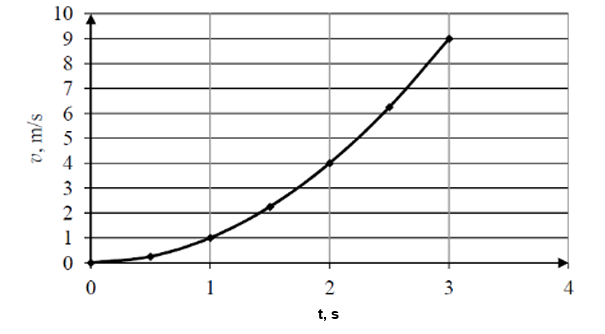
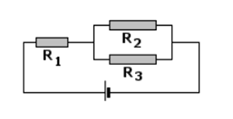

Pełne rozwiązania z wyjaśnieniami krok po kroku
Mając pomiary prędkości i czasu:
| V (m/s) | 2 | 3 | 6 | 11 |
|---|---|---|---|---|
| t (s) | 0 | 1 | 2 | 3 |
Wyznacz:
a) równanie toru ruchu,
b) drogę w drugiej i trzeciej sekundzie ruchu,
c) prędkość w drugiej sekundzie ruchu,
d) przyspieszenie oraz narysuj wykres a(t),
e) przyrost drogi i prędkości między 1 a 3 sekundą ruchu.
a) Równanie toru ruchu:
Z danych widzimy, że prędkość zmienia się w czasie. Obliczamy przyspieszenie:
a = ΔV/Δt = (3-2)/(1-0) = 1 m/s²
Sprawdzamy dla innych przedziałów: (6-3)/(2-1) = 3 m/s², (11-6)/(3-2) = 5 m/s²
Przyspieszenie nie jest stałe, więc ruch nie jest jednostajnie zmienny. Z danych wynika, że przyspieszenie rośnie liniowo: a(t) = 2t + 1
Prędkość: V(t) = ∫a(t)dt = ∫(2t+1)dt = t² + t + C
Dla t=0, V=2 → C=2
V(t) = t² + t + 2
Droga: s(t) = ∫V(t)dt = ∫(t² + t + 2)dt = (1/3)t³ + (1/2)t² + 2t + C
Dla t=0, s=0 → C=0
s(t) = (1/3)t³ + (1/2)t² + 2t
b) Droga w drugiej i trzeciej sekundzie:
Droga w 2. sekundzie: s(2) - s(1) = [(1/3)*8 + (1/2)*4 + 4] - [(1/3)*1 + (1/2)*1 + 2] = [8/3 + 2 + 4] - [1/3 + 0.5 + 2] = [2.67+2+4] - [0.33+0.5+2] = 8.67 - 2.83 = 5.84 m
Droga w 3. sekundzie: s(3) - s(2) = [(1/3)*27 + (1/2)*9 + 6] - [(1/3)*8 + (1/2)*4 + 4] = [9 + 4.5 + 6] - [2.67 + 2 + 4] = 19.5 - 8.67 = 10.83 m
Droga w 2. sekundzie: 5.84 m, w 3. sekundzie: 10.83 m
c) Prędkość w drugiej sekundzie ruchu:
V(2) = 2² + 2 + 2 = 4 + 2 + 2 = 8 m/s
Prędkość w 2. sekundzie: 8 m/s
d) Przyspieszenie: a(t) = 2t + 1
Wykres a(t): prosta linia o nachyleniu 2, przecina oś a w punkcie (0,1)
a(0)=1 m/s², a(1)=3 m/s², a(2)=5 m/s², a(3)=7 m/s²
e) Przyrost drogi i prędkości między 1 a 3 sekundą:
Przyrost drogi: s(3) - s(1) = [(1/3)*27 + (1/2)*9 + 6] - [(1/3)*1 + (1/2)*1 + 2] = [9+4.5+6] - [0.33+0.5+2] = 19.5 - 2.83 = 16.67 m
Przyrost prędkości: V(3) - V(1) = (9+3+2) - (1+1+2) = 14 - 4 = 10 m/s
Przyrost drogi: 16.67 m, przyrost prędkości: 10 m/s
Rakieta zmienia przyspieszenie według wzoru: a(t)=3t+1. Oblicz prędkość rakiety po 3 sekundach oraz wysokość rakiety po upływie 2 sekund.
Prędkość: V(t) = ∫a(t)dt = ∫(3t+1)dt = (3/2)t² + t + C
Zakładamy, że w t=0, V=0 → C=0
V(t) = (3/2)t² + t
V(3) = (3/2)*9 + 3 = 13.5 + 3 = 16.5 m/s
Wysokość: h(t) = ∫V(t)dt = ∫[(3/2)t² + t]dt = (3/2)*(1/3)t³ + (1/2)t² + C = (1/2)t³ + (1/2)t² + C
Zakładamy, że w t=0, h=0 → C=0
h(t) = (1/2)t³ + (1/2)t²
h(2) = (1/2)*8 + (1/2)*4 = 4 + 2 = 6 m
Prędkość po 3s: 16.5 m/s, wysokość po 2s: 6 m
Z jakim przyspieszeniem poruszał się będzie układ dwóch klocków pokazanych na rysunku. Współczynnik tarcia klocka o stół wynosi 0,1 (M=3kg, m=1kg). Przyjmij płaską powierzchnię.
Do obliczenia przyspieszenia układu dwóch klocków stosujemy wzór: a = g(m - μM)/(m + M)
Gdzie:
Podstawiamy wartości:
a = 10 · (1 - 0.1 · 3)/(1 + 3) = 10 · (1 - 0.3)/4 = 10 · 0.7/4 = 7/4 = 1.75 m/s²
Przyspieszenie układu: 1.75 m/s²
Mając zależność V(t) = 2t² +3, wyznacz wartość siły F, jaka działa na to ciało, jeżeli jego masa m=2 kg. Oblicz drogę jaką pokonało to ciało w pierwszych 3 sekundach ruchu. V₀=0.
Przyspieszenie: a(t) = dV/dt = d(2t² +3)/dt = 4t
Siła: F = m*a = 2 * 4t = 8t N
F(t) = 8t N
Droga: s(t) = ∫V(t)dt = ∫(2t² +3)dt = (2/3)t³ + 3t + C
Dla t=0, s=0 → C=0
s(3) = (2/3)*27 + 3*3 = 18 + 9 = 27 m
Droga w pierwszych 3 sekundach: 27 m
Na równi o kącie nachylenia α=30° znajdują się dwa klocki o masach m₁=1kg i m₂=6kg. Układ porusza się w dół równi. m₁ zwisa swobodnie na sznurku poza równią, m₂ znajduje się na równi. Oba klocki są połączone linką przez bloczek. Uwzględnij tarcie (μ=0,2).
a) Wyznacz przyspieszenie w układzie
b) Wyznacz siłę naciągu linki N
Siły działające:
- Na m₁ (zwisające): siła ciężkości m₁g w dół, siła naciągu N w górę
- Na m₂ (na równi):
Równania ruchu:
Dla m₁ (porusza się w górę):
Dla m₂ (porusza się w dół równi):
Obliczenie sił:
Tarcie: T = μ·m₂g·cosα = 0,2·6·10·cos30° = 0,2·60·(√3/2) = 12·0,866 = 10,392 N
Składowa równoległa: m₂g·sinα = 6·10·0,5 = 30 N
Siła ciężkości m₁: m₁g = 1·10 = 10 N
Układ równań:
Rozwiązanie układu:
Z równania 1): N = 10 + a
Podstawiamy do równania 2):
Obliczamy siłę naciągu:
Wyjaśnienie poprawek:
W poprzednim rozwiązaniu błędnie przyjęto kierunek ruchu dla m₁. Ponieważ m₂ = 6kg jest znacznie cięższe od m₁ = 1kg, a dodatkowo równia zmniejsza efektywną siłę ciężkości m₂ tylko o 50%, m₂ porusza się w dół równi, ciągnąc m₁ w górę. Dlatego poprawne równanie dla m₁ to: N - m₁g = m₁a (gdzie a jest dodatnie w górę dla m₁).
Wyznacz wartość ładunku przepływającego przez poprzeczny przekrój przewodnika w czasie 3 pierwszych sekund, jeśli funkcja natężenia w czasie przedstawiona jest zależnością I(t)= t²+2.
Ładunek: Q = ∫I(t)dt
Q = ∫(t² + 2)dt od 0 do 3 = [ (1/3)t³ + 2t ] od 0 do 3 = ( (1/3)*27 + 2*3 ) - 0 = 9 + 6 = 15 C
Ładunek: 15 C
Wyznacz wartość pracy wykonanej w układzie na drodze s=2 metrów, jeśli zależność siły od przesunięcia wyraża się funkcją F=2s² +3.
Praca: W = ∫F(s)ds
W = ∫(2s² + 3)ds od 0 do 2 = [ (2/3)s³ + 3s ] od 0 do 2 = ( (2/3)*8 + 3*2 ) - 0 = (16/3) + 6 ≈ 5,333 + 6 = 11,333 J
Praca: ≈11,33 J
Rzucamy pionowo ciało o masie m=0,5kg z szybkością V₀=3m/s z wysokości. Na jaką maksymalną wysokość wzniesie się ciało? Jaką energię kinetyczną posiada to ciało w chwili uderzenia w Ziemię?
Maksymalna wysokość (z zasady zachowania energii):
mgh = (1/2)mV₀² → h = V₀²/(2g) = 9/(2*10) = 0,45 m
Maksymalna wysokość: 0,45 m
Energia kinetyczna przy uderzeniu (ponownie z zasady zachowania energii):
E_k = (1/2)mV₀² = (1/2)*0,5*9 = 2,25 J
Energia kinetyczna: 2,25 J
Pod jakim kątem należy rzucić ciało, aby:
- zasięg rzutu był maksymalny,
- zasięg rzutu równał się maksymalnej wysokości, na jaką wzniesie się ciało?
a) Zasięg maksymalny: R = (V₀²·sin2α)/g
Maksimum gdy sin2α = 1 → 2α = 90° → α = 45°
Kąt dla maksymalnego zasięgu: 45°
b) Zasięg równy maksymalnej wysokości:
Zasięg: R = (V₀²·sin2α)/g
Maks. wysokość: H = (V₀²·sin²α)/(2g)
Równanie: (V₀²·sin2α)/g = (V₀²·sin²α)/(2g)
Upraszczamy: 2·sin2α = sin²α
4·sinα·cosα = sin²α
Dzielimy obustronnie przez sinα (dla α≠0): 4·cosα = sinα → tanα = 4 → α = arctan(4) ≈ 76°
Kąt: ≈76°
Na wykresie przedstawiono zależność wartości prędkości poruszającego się po linii prostej samochodu w funkcji czasu:
a) Zapisz zależność V(t),
b) Oblicz drogę w pierwszej sekundzie ruchu,
c) Oblicz przyspieszenie w drugiej sekundzie ruchu.
a) Z danych: t=0,v=0; t=1,v=1; t=2,v=4; t=3,v=9
V(t) = t² (ponieważ 0²=0, 1²=1, 2²=4, 3²=9)
V(t) = t²
b) Droga w pierwszej sekundzie: s = ∫V(t)dt od 0 do 1 = ∫t²dt = [ (1/3)t³ ] od 0 do 1 = 1/3 m
Droga: ≈0,333 m
c) Przyspieszenie: a(t) = dV/dt = 2t
W drugiej sekundzie (t=2): a=2*2=4 m/s²
Przyspieszenie: 4 m/s²
Wyznacz masę ciała (poruszającego się po prostej), które pod działaniem siły F=30N w czasie t=5s zmienia swą szybkość z V₀=15 m/s do Vₖ=30 m/s.
Przyspieszenie: a = ΔV/Δt = (30-15)/5 = 15/5 = 3 m/s²
Z drugiej zasady dynamiki: F = m·a
30 = m·3 → m = 10 kg
Masa ciała: 10 kg
Jaką pracę trzeba wykonać, aby ciało o masie m=10kg w ciągu czasu t=4s (przyjmujemy V₀=0), przesunąć poziomo z przyspieszeniem a=5m/s²? Tarcie pomijamy.
Droga: s = (1/2)at² = (1/2)*5*16 = 40 m
Siła: F = m·a = 10*5 = 50 N
Praca: W = F·s = 50*40 = 2000 J
Praca: 2000 J
W odległości 3cm przed soczewką skupiającą o ogniskowej f=5cm umieszczono przedmiot o wysokości 1,5cm. W jakiej odległości od soczewki powstanie obraz i jaka będzie jego wysokość?
Równanie soczewki: 1/f = 1/x + 1/y
1/5 = 1/3 + 1/y
1/y = 1/5 - 1/3 = 3/15 - 5/15 = -2/15
y = -15/2 = -7,5 cm
Obraz powstanie w odległości 7,5 cm po tej samej stronie co przedmiot (obraz pozorny)
Powiększenie: p = y/x = (-7,5)/3 = -2,5
Wysokość obrazu: h' = |p|·h = 2,5·1,5 = 3,75 cm
Wysokość obrazu: 3,75 cm
W obwodzie jak na rysunku napięcie między końcami opornika R₁ wynosi 4V. Jaką wartość ma napięcie między końcami opornika R₂? Przyjmij R₁=2Ω, R₂=3Ω, R₃=3Ω. Rezystor R₂ i R₃ są podłączone równolegle, a R₁ jest podłączony do nich szeregowo.
Rezystancja zastępcza R₂ i R₃ (równolegle):
1/R₂₃ = 1/3 + 1/3 = 2/3 → R₂₃ = 1,5 Ω
Całkowita rezystancja: R_c = R₁ + R₂₃ = 2 + 1,5 = 3,5 Ω
Natężenie prądu: I = U₁/R₁ = 4/2 = 2 A
Napięcie na R₂₃: U₂₃ = I·R₂₃ = 2·1,5 = 3 V
Ponieważ R₂ i R₃ są równolegle, to napięcie na nich jest takie same:
Napięcie na R₂: 3 V
Równanie pewnego oscylatora harmonicznego ma postać: x(t)=0,3 cos(6πt). Oblicz okres tego ruchu, częstotliwość oraz maksymalną prędkość.
Ogólna postać: x(t) = A·cos(ωt)
Z równania: A = 0,3 m, ω = 6π rad/s
Okres: T = 2π/ω = 2π/(6π) = 1/3 s
Okres: ≈0,333 s
Częstotliwość: f = 1/T = 3 Hz
Częstotliwość: 3 Hz
Maksymalna prędkość: V_max = A·ω = 0,3·6π ≈ 0,3·18,84 ≈ 5,652 m/s
Maksymalna prędkość: ≈5,65 m/s
Uwaga: W rozwiązaniach przyjęto wartość przyspieszenia ziemskiego g = 10 m/s² dla uproszczenia obliczeń. W rzeczywistych warunkach wartość ta wynosi około 9,81 m/s².